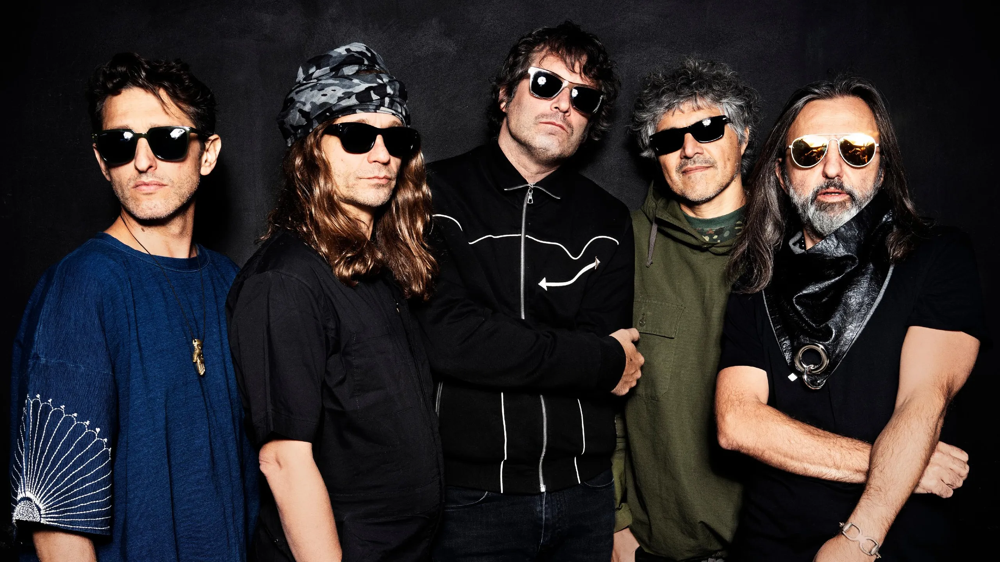

Biografia
Durante más de tres décadas, Babasonicos se ha encargado de desestabilizar al rock argentino desde el mismísimo corazón de la bestia. Pocas bandas han logrado que canciones tan incorrectas se conviertan en hits radiales y que estadios enteros, en toda América latina, canten verdaderas barrabasadas como si se tratara de dulces e inofensivas cancioncitas pop.
Con determinación, talento e inteligencia, el grupo sostuvo una trayectoria ascendente, desde los sótanos en los que se gestó el Nuevo Rock Argentino de los ’90 hasta ámbitos que albergan a decenas de miles de personas. Luego de 13 discos oficiales editados, la búsqueda continúa.